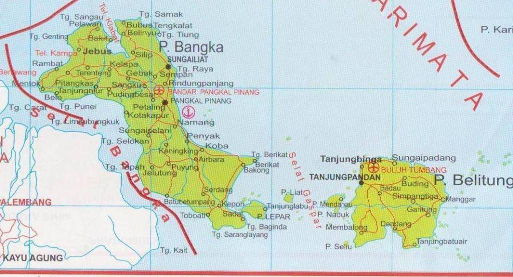
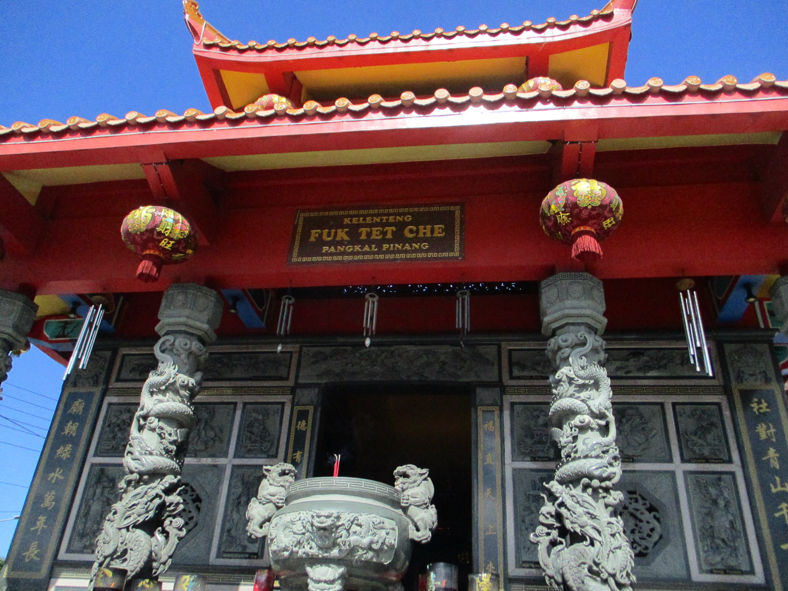
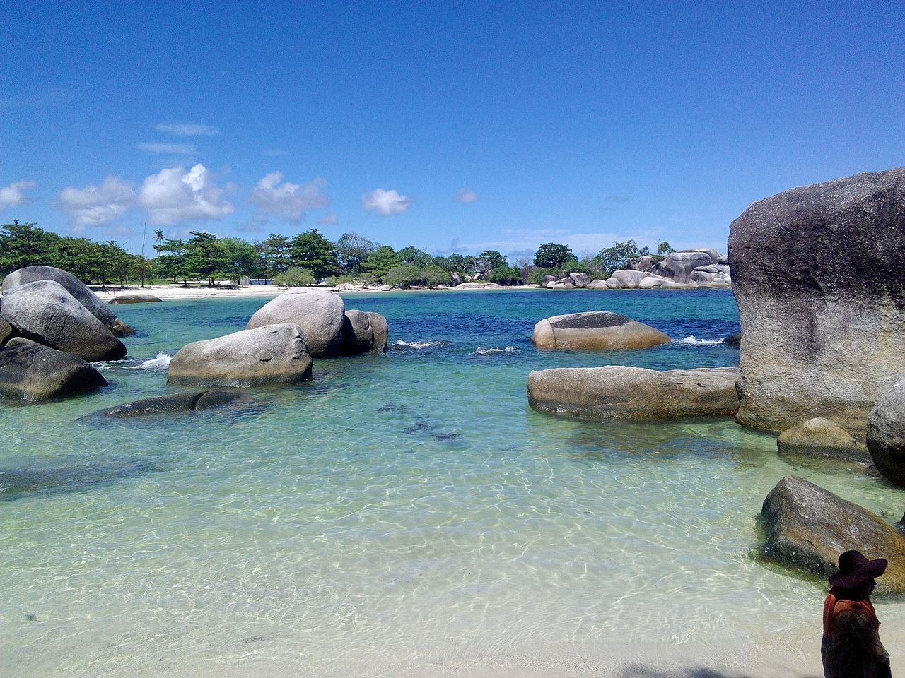

Sejarah

Wilayah Provinsi Kepulauan Bangka Belitung, terutama Pulau Bangka berganti-ganti menjadi daerah taklukan Kerajaan Sriwijaya dan Majapahit. Setelah kapitulasi dengan Belanda, Kepulauan Bangka Belitung menjadi jajahan Inggris sebagai "Duke of Island". 20 Mei 1812 kekuasaan Inggris berakhir setelah konvensi London 13 Agustus 1824, terjadi peralihan kekuasaan daerah jajahan Kepulauan Bangka Belitung antara MH. Court (Inggris) dengan K. Hcyes (Belanda) di Muntok pada 10 Desember 1816. Kekuasaan Belanda mendapat perlawanan Depati Barin dan putranya Depati Amir yang dikenal sebagai perang Depati Amir (1849–1851). Kekalahan perang Depati Amir menyebabkan Depati Amir diasingkan ke Desa Air Mata Kupang NTT. Atas dasar stbl. 565, tanggal 2 Desember 1933 pada tanggal 11 Maret 1933 dibentuk Resindetail Bangka Belitung Onderhoregenheden yang dipimpin seorang residen Bangka Belitung dengan 6 Onderafdehify yang dipimpin oleh Ast. Residen. Di Pulau Bangka terdapat 5 Onderafdehify yang akhirnya menjadi 5 keresidenan sedang di Pulau Belitung terdapat 1 keresidenan. Di zaman Jepang, Keresidenan Bangka Belitung diperintah oleh pemerintahan Militer Jepang yang disebut Bangka Beliton Ginseibu. Setelah Proklamasi kemerdekaan Republik Indonesia, oleh Belanda dibentuk Dewan Bangka Sementara pada 10 Desember 1946 (stbl.1946 No.38) yang selanjutnya resmi menjadi Dewan Bangka yang diketuai oleh Musarif Datuk Bandaharo Leo yang dilantik oleh Belanda pada 11 November 1947. Dewan Bangka merupakan Lembaga Pemerintahan Otonomi Tinggi. Pada 23 Januari 1948 (stb1.1948 No.123), Dewan Bangka, Dewan Belitung dan Dewan Riau bergabung dalam Federasi Bangka Belitung dan Riau (FABERI) yang merupakan suatu bagian dalam Negara Republik Indonesia Serikat (RIS). Berdasarkan Keputusan Presiden RIS Nomor 141 Tahun 1950 kembali bersatu dengan Negara Kesatuan Republik Indonesia (NKRI) hingga berlaku undang-undang Nomor 22 Tahun 1948. Pada tanggal 22 April 1950 oleh Pemerintah diserahkan wilayah Bangka Belitung kepada Gubernur Sumatera Selatan Dr. Mohd. Isa yang disaksikan oleh Perdana Menteri Dr. Hakim dan Dewan Bangka Belitung dibubarkan. Sebagai Residen Bangka Belitung ditunjuk R. Soemardja yang berkedudukan di Pangkal Pinang. Berdasarkan UUDS 1950 dan UU Nomor 22 Tahun 1948 dan UU Darurat Nomor 4 tanggal 16 November 1956 Keresidenan Bangka Belitung berada di Sumatera Selatan yaitu Kabupaten Bangka dan dibentuk juga kota kecil Pangkalpinang. Berdasarkan UU Nomor 1 Tahun 1957, Pangkalpinang menjadi Kotapraja. Pada tanggal 13 Mei 1971, Presiden Soeharto meresmikan Sungai Liat sebagai ibu kota Kabupaten Bangka. Berdasarkan UU Nomor 27 Tahun 2000 wilayah Kota Pangkalpinang, Kabupaten Bangka dan Kabupaten Belitung menjadi Provinsi Kepulauan Bangka Belitung, dengan Pejabat Gubernur pertama Drs Amur Muhasyim SH dan Ketua DPRD pertama H. Emron Pangkapi (Bang Emran). Selanjutnya sejak tanggal 27 Januari 2003 Provinsi Kepualauan Bangka Belitung mengalami pemekaran wilayah dengan menambah 4 Kabupaten baru yaitu Kabupaten Bangka Barat, Bangka Tengah, Belitung Timur dan Bangka Selatan. Cuaca dan Iklim Tahun 2007 kelembaban udara di Provinsi Kepulauan Bangka Belitung berkisar antara 77,4 % sampai dengan 87,3 % dengan rata-rata perbulan mencapai 83,1 %, dengan curah hujan antara 58,3 mm sampai dengan 476,3 mm dan tekanan udara selama tahun 2007 sekitar 1.010,1 MBS. Rata-rata suhu udara selama tahun 2007 di provinsi ini mencapai 26,7 derajat C dengan rata-rata suhu udara maksimum 29,9 derajat C dan rata-rata suhu udara minimum 24,9 derajat C. Suhu udara maksimum tertinggi terjadi pada Bulan Oktober dengan suhu udara 31,7 derajat C, sedangkan untuk suhu udara minimum terendah terjadi pada Bulan Februari dan Maret dengan suhu udara sebesar 23,2 derajat C. Kepulauan Bangka Belitung memiliki Iklim tropis yang dipengaruhi angin musim yang mengalami bulan basah selama tujuh bulan sepanjang tahun dan bulan kering selama lima bulan terus menerus. Tahun 2007 bulan kering terjadi pada Bulan Agustus sampai dengan Oktober dengan hari hujan 11-15 hari per bulan. Untuk bulan basah hari hujan 16-27 hari per bulan, terjadi pada Bulan Januari sampai dengan Bulan Juli dan Bulan November sampai Bulan Desember.
Geografis
Keadaan alam Provinsi Kepulauan Bangka Belitung sebagian besar merupakan dataran tinggi, lembah dan sebagian kecil pegunungan dan perbukitan. Ketinggian dataran rendah rata-rata sekitar 50 meter di atas permukaan laut dan ketinggian daerah pegunungan antara lain untuk Gunung Maras mencapai 699 meter di Kecamatan Belinyu (P. Bangka), Gunung Tajam Kaki ketinggiannya kurang lebih 500 meter di atas permukaan laut di Pulau Belitung. Sedangkan untuk daerah perbukitan seperti Bukit Menumbing ketinggiannya mencapai kurang lebih 445 meter di Kecamatan Mentok dan Bukit Mangkol dengan ketinggian sekitar 395 meter di atas permukaan laut di Kecamatan Pangkalan Baru
Wisata
Fuk Tet Che Semabung

Fondasi awal Kelenteng Fuk Tet Che dibangun kira-kira pada abad ke-19.[4] Saat itu lokasi kelenteng berdiri masih berada di daerah pinggiran Kota Pangkalpinang. Warga Tionghoa dari tiga desa yang berdekatan seperti Kampung Besi (Tet Fu), Semabung (Yung Fo Hin) dan Kampung Batur awalnya menggunakan kuil ini sebagai tempat penghormatan bagi Dewa Bumi.[4] Dewa Bumi (Fu De Zheng Shen / Fuk Tet Cin Sin) adalah salah satu tokoh terpenting dalam Kepercayaan Tradisional Rakyat Hakka (客家民間信仰). Kuil Dewa Bumi ini didirikan pada lokasi yang strategis, di pertigaan dan menghadap ke pusat kota Pangkalpinang.[4] Pendirian kuil atau tempat sakral pada pertigaan jalan (lokasi strategis) merupakan bentuk perlindungan terhadap pengguna jalan dari kecelakaan atau bahaya.[2] Tradisi semacam ini dapat ditemui di Tiongkok, misalnya dalam bentuk pendirian shigandang. Kelenteng ini berganti nama menjadi Vihara Satya Budhi pada zaman Orde Baru.[2] Pada tahun 2015 Vihara Satya Budhi terbakar. Setelah musibah tersebut, kelenteng ini dibangun kembali dan nama yang aslinya dipulihkan menjadi Fuk Tet Che atau secara harafiah berarti Kuil Yang Memuliakan Dewa Bumi pada bulan Februari tahun 2017.
Pantai Tanjung Tinggi

Tanjung tinggi adalah pantai yang diapit oleh dua semenanjung, yaitu tanjung Kelayang dan tanjung Pendam. Nama tanjung tinggi diambil dari kata tanjung yang artinya semenanjung dan tinggi yang artinya pantai yang memiliki bebatuan yang tinggi. Pantai Tanjung Tinggi merupakan salah satu tempat wisata di pulau Belitung. Letaknya tidak jauh dari Pantai Tanjung Kelayang dan berjarak sekitar 31 km dari kota Tanjung Pandan. Pantai ini memiliki area seluas 80 hektar, berpasir putih, dan terdapat ratusan batu granit besar yang tersebar di kedua semenanjung dan juga di laut di depan pantai. Ukuran granit mulai dari beberapa meter kubik hingga ratusan meter kubik lebih besar dari sebuah bangunan sebesar rumah, sehingga menjadi tempat wisata ungulan di Pulau Belitung. Tanjung tinggi juga dinamakan Pelabuhan Bilik.[1] Dahulu tempat ini adalah pelabuhan nelayan bagi desa terdekat Keciput atau Tanjung Tinggi.[1] Di pantai ini tidak perlu khawatir dengan serangan ikan hiu, karena tidak pernah terjadi di Belitung. Satu-satunya yang kadang-kadang harus diwaspadai adalah ubur-ubur, khususnya yang besar. Fasilitas lain di Pantai Tanjung Tinggi ini lumayan memadai.[1] Karena tidak jauh dari lokasi pantai terdapat hotel bagi anda yang ingin menginap.[1] Selain itu disana juga terdapat warung-wa